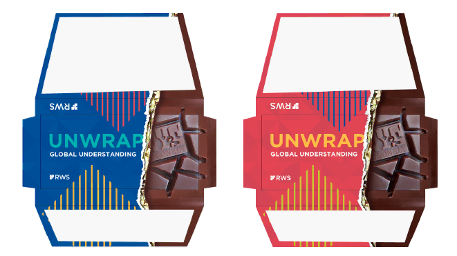
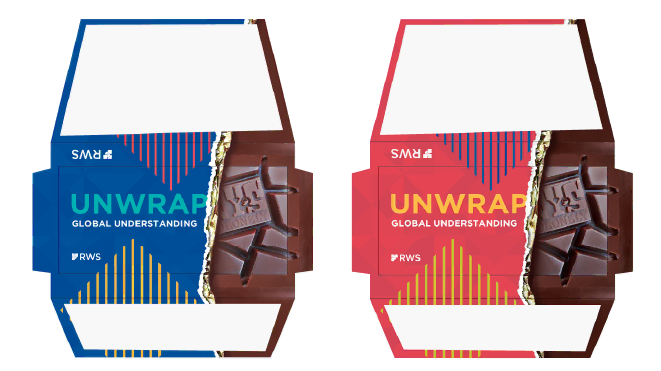

Event Booths

Creative and impactful event booths.
I welcome you here. My name is Kate and this is a place where I merge the artistry of graphic design with the strategic depth of UX/UI.
Creative and impactful event booths.

Diverse and creative designs for all printed needs.
 

Diverse and creative designs for all printed needs.


Innovative and fresh design concepts.
Innovative and fresh design concepts.


Unique and captivating illustrations.

It’s nice to meet you,
Inspired by the beauty of colors, the power of stories, and the richness of diverse cultures, I seek to celebrate human connection across digital and printed mediums.
experience as an inhouse graphic designer
countries abroad I worked at
experience in international companies
different job titles I had
I strongly believe that talent is overrated. What matters is the desire to create.
I wish everyone with such a passion takes first steps to the unknown waters.
Since being a kid I was drawn to drawing and later as a teenager I loved to spent my time playing with Photoshop.
Studying geography and social studies made me appreciate both world around us and its people. After obtaining master’s degree in education I desired to then experience these in real life rather than in theory :)
Working in England and meeting people from around the world, I fall in love with a beautiful variety of different cultures. Later I moved to Montana in USA and was stunned by local life and beauty of nature. Same when working as a photographer in the national park in Canada.
When not on the road I was gaining experience working for international companies based in South Moravia, the region I come from. I had an opportunity to work in HR department, but also with GIS (geographical information systems). One of my favorite jobs though still is working in the vineyard. I came closer to graphic design when working for kids photography company in Brno.
That makes it that in the last 5 years I have been focusing on graphic design and gaining new skills and knowledge. Meanwhile I have been working as an inhouse graphic designer for RWS. In the 2024 I have completed 8 months course on UX/UI design. When I look back, I see that what led me here was not one direct path. It has been rather engaging journey and each of those turns have had some meaning helping me to get closer to the creative future and the way of being.

Do you have a minute?
Let's get in touch and let me know what brought you here.
Are you searching for a designer?
Or do you just want to share
some thoughts?
Let's connect and may be we can build something
together!
kateilias@seznam.cz

Social Ads
Engaging and effective social media advertisements.